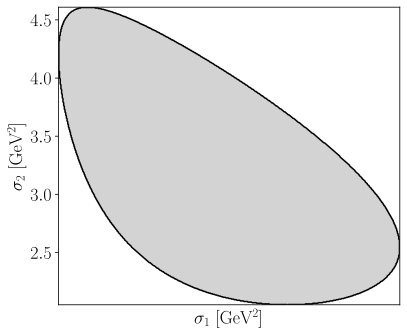
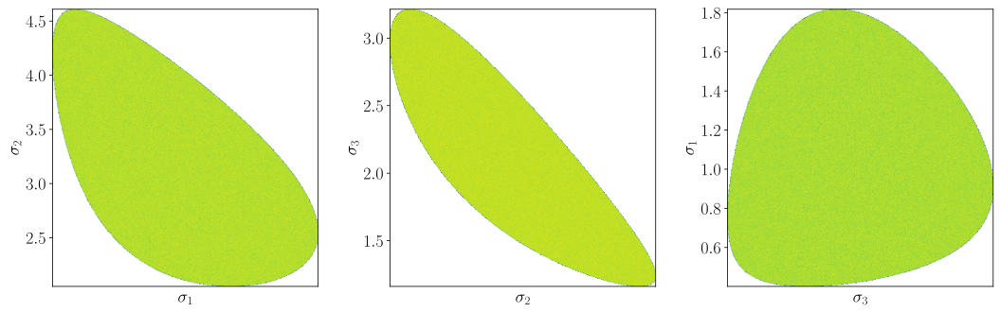

7.3. Phase space sample#
7.3.1. Definition#
See also
AmpForm’s Kinematics page.
\[\begin{split}\displaystyle \begin{cases} 1 & \text{for}\: \phi\left(\sigma_{i}, \sigma_{j}\right) \leq 0 \\\text{NaN} & \text{otherwise} \end{cases}\end{split}\]
\[\begin{split}\displaystyle \begin{aligned}
\phi\left(\sigma_{i}, \sigma_{j}\right) \;&=\; \lambda\left(\lambda\left(\sigma_{j}, m_{j}^{2}, m_{0}^{2}\right), \lambda\left(\sigma_{k}, m_{k}^{2}, m_{0}^{2}\right), \lambda\left(\sigma_{i}, m_{i}^{2}, m_{0}^{2}\right)\right) \\
\end{aligned}\end{split}\]
\[\begin{split}\displaystyle \begin{aligned}
\lambda\left(x, y, z\right) \;&=\; x^{2} - 2 x y - 2 x z + y^{2} - 2 y z + z^{2} \\
\end{aligned}\end{split}\]
m1, m2, m3 = sp.symbols("m1:4")
display_latex({σk: compute_third_mandelstam(σi, σj, m0, m1, m2, m3)})
\[\begin{split}\displaystyle \begin{aligned}
\sigma_{k} \;&=\; m_{0}^{2} + m_{1}^{2} + m_{2}^{2} + m_{3}^{2} - \sigma_{i} - \sigma_{j} \\
\end{aligned}\end{split}\]
7.3.2. Visualization#
\[\begin{split}\displaystyle \begin{aligned}
m_{0} \;&=\; 2.28646 \\
m_{1} \;&=\; 0.938272046 \\
m_{2} \;&=\; 0.13957018 \\
m_{3} \;&=\; 0.49367700000000003 \\
\end{aligned}\end{split}\]

